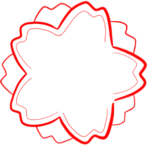

<nav class="fixed top-0 z-50 w-full bg-gray-950/95 backdrop-blur-md border-b border-gray-800/50">
    <div class="px-4 py-3 lg:px-6">
      <div class="flex items-center justify-between">
        <div class="flex items-center gap-3">
          <button (click)="toggleSidebar.emit()"
                  type="button"
                  class="inline-flex items-center p-2 text-gray-400 rounded-xl hover:bg-gray-800 hover:text-red-400 focus:outline-none focus:ring-2 focus:ring-red-500/30 transition-all duration-200">
            <span class="sr-only">Open sidebar</span>
            <svg class="w-6 h-6" fill="currentColor" viewBox="0 0 20 20"
                 xmlns="http://www.w3.org/2000/svg">
              <path clip-rule="evenodd" fill-rule="evenodd" d="M2 4.75A.75.75 0 012.75 4h14.5a.75.75 0 010 1.5H2.75A.75.75 0 012 4.75zm0 10.5a.75.75 0 01.75-.75h7.5a.75.75 0 010 1.5h-7.5a.75.75 0 01-.75-.75zM2 10a.75.75 0 01.75-.75h14.5a.75.75 0 010 1.5H2.75A.75.75 0 012 10z"></path>
            </svg>
          </button>
          <a (click)="goToDashboard()" class="flex items-center gap-3 cursor-pointer">
            <div class="bg-white rounded-xl p-1.5">
              
            </div>
            <span class="text-lg font-semibold tracking-wider text-white hidden sm:block">M O R P H I N E</span>
          </a>
        </div>
        <div *ngIf="userName" class="flex items-center">
          <div class="flex items-center gap-2 px-3 py-1.5 rounded-xl bg-gray-800/50 border border-gray-700/50">
            <div class="w-2 h-2 rounded-full bg-green-500"></div>
            <span class="text-sm font-medium text-gray-300">{{ userName }}</span>
          </div>
        </div>
      </div>
    </div>
  </nav>
